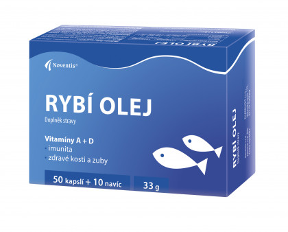

Rybí olej
Rybí olej je bohatý na omega-3 mastné kyseliny. Ty podporují zdraví srdce, mozku a kloubů. Lidé ho často užívají jako doplněk stravy. Nachází se i v tučných rybách, jako je losos nebo makrela. Dodržování doporučené dávky je důležité pro bezpečnost.
Omega-3 kyseliny mohou snižovat záněty v těle. Pravidelná suplementace může podporovat kognitivní funkce a snižovat riziko srdečních onemocnění. Přehánění s dávkami může zvyšovat riziko krvácení. Kvalitní výrobek zaručuje čistotu a účinnost. Správně užívaný rybí olej je užitečný doplněk stravy pro zdraví.
